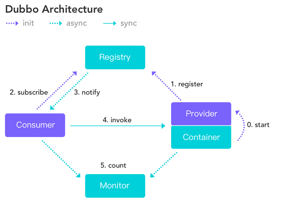
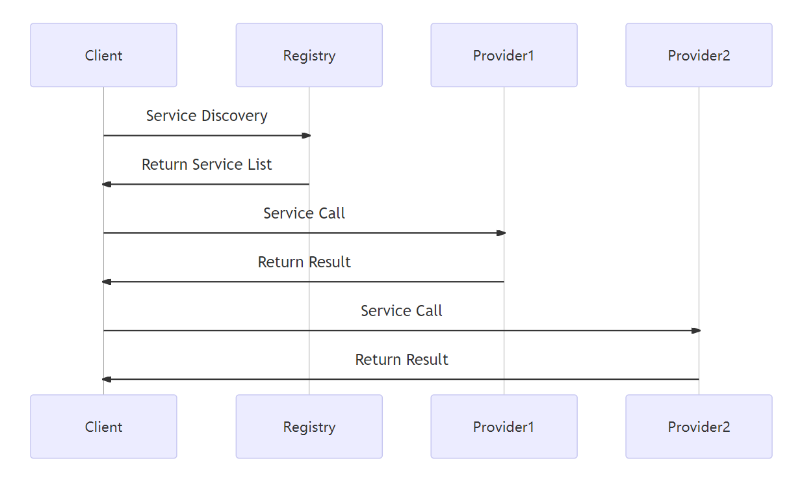
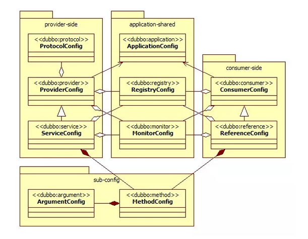

Dubbo
Dubbo是阿里巴巴开源的基于Java的高性能RPC分布式服务框架，现已成为Apache基金会孵化项目。
地址：https://cn.dubbo.apache.org/zh-cn/
服务注册与发现的流程图
下图来自Dubbo官网

Dubbo节点角色
| 节点 | 角色说明 |
|---|---|
| Provider | 暴露服务的服务提供方 |
| Consumer | 调用远程服务的服务消费方 |
| Registry | 服务注册与发现的注册中心 |
| Monitor | 统计服务的调用次数和调用时间的监控中心 |
| Container | 服务运行容器 |
Dubbo 服务治理
Dubbo服务治理是一种服务管理和协调的解决方案，它主要是为分布式系统提供服务管理、服务调度、服务监控、服务负载均衡等功能。
Dubbo服务治理可以有效地管理和调度分布式系统中的服务，通过提供丰富的管理工具可以方便地实现服务的监控、调度和负载均衡等功能。
在分布式系统中，Dubbo服务治理可以提供一种方式，让不同的应用程序通过调用远程服务实现互联互通。
以下是一个简单的Dubbo服务治理的时序图，展示了Dubbo服务注册、发现和调用的过程：

在这个时序图中，Client是服务的消费者，Registry是服务注册中心，Provider1和Provider2是服务的提供者。
整个过程分为三个步骤：
- 服务发现：
Client向Registry发起服务发现请求，Registry返回可用的服务列表。 - 服务调用：
Client向Provider1发起服务调用请求，Provider1返回结果。Client向Provider2发起服务调用请求，Provider2返回结果。
- 结果返回：
Provider1和Provider2返回结果给Client。
Dubbo服务治理的重要性在于，它可以帮助开发人员管理和协调不同的服务和组件，并确保服务的可用性和可靠性。
通过Dubbo服务治理，开发团队可以通过一个单一的入口管理所有服务，这对于大规模分布式服务的管理非常重要。
Dubbo支持的协议
dubbo(推荐使用的协议)：单一长连接和NIO异步通讯，适合大并发小数据量的服务调用，以及消费者远大于提供者。传输协议TCP，异步，Hessian序列化- 优点：支持异步通信，性能较高。
- 缺点：只能在
Java环境下使用。
hessian：集成Hessian服务，基于HTTP通讯，采用Servlet暴露服务，Dubbo内嵌Jetty作为服务器时默认实现，提供与Hessian服务互操作。 多个短连接，同步HTTP传输，Hessian序列化，传入参数较大，提供者大于消费者，提供者压力较大，可传文件- 优点：采用二进制序列化，传输效率高。
- 缺点：只能在
Java环境下使用
rmi：采用JDK标准的RMI协议实现，传输参数和返回参数对象需要实现Serializable接口， 使用java标准序列化机制，使用阻塞式短连接，传输数据包大小混合，消费者和提供者个数差不多，可传文件，传输协议TCP。 多个短连接，TCP协议传输，同步传输，适用常规的远程服务调用和rmi互操作。 在依赖低版本的Common-Collections包，java序列化存在安全漏洞- 优点：使用
JDK标准的RMI协议，易于使用。 - 缺点：只能在
Java环境下使用。
- 优点：使用
http：基于Http表单提交的远程调用协议，使用Spring的HttpInvoke实现。多个短连接，传输协议HTTP，传入参数大小混合， 提供者个数多于消费者，需要给应用程序和浏览器JS调用。- 优点：支持跨语言调用，使用方便。
- 缺点：传输效率相对较低。
webservice：基于WebService的远程调用协议，集成CXF实现，提供和原生WebService的互操作。 多个短连接，基于HTTP传输，同步传输，适用系统集成和跨语言调用- 优点：采用SOAP协议，支持跨语言调用。
- 缺点：传输效率相对较低。
GRPC：GRPC是谷歌开源的基于HTTP2的通信协议，支持多种编程语言，包括C++，Java，Python，Go等，适用于各种语言环境下的服务调用。- 优点：使用
HTTP2协议，显著降低带宽消耗和提高性能。 - 缺点：尚未提供连接池，基于
HTTP2，绝大部多数HTTP Server、Nginx都尚不支持。
- 优点：使用
memcache：基于memcached实现的RPC协议redis：基于redis实现的RPC协议
Dubbo序列化框架
默认使用Hessian序列化，还有Duddo、FastJson、Java自带序列化。
Hessian是一个采用二进制格式传输的服务框架，相对传统更轻量、更快速。
Hessian原理与协议
HTTP的协议约定了数据传输的方式，Hessian无法改变太多
Hessian中client与server的交互，基于HTTP-POST方式。Hessian将辅助信息，封装在HTTP Header中，比如授权token等，我们可以基于http-header来封装关于安全校验、meta数据等。Hessian提供了简单的校验机制。- 对于
Hessian的交互核心数据，比如调用的方法和参数列表信息，将通过POST请求的body体直接发送，格式为字节流。 - 对于
Hessian的server端响应数据，将在response中通过字节流的方式直接输出。Hessian的协议本身并不复杂，所谓协议(protocol)就是约束数据的格式，client按照协议将请求信息序列化成字节序列发送给server端，server端根据协议，将数据反序列化成对象，然后执行指定的方法， 并将方法的返回值再次按照协议序列化成字节流，响应给client，client按照协议将字节流反序列话成对象。
Hessian的对象序列化机制有8种原始类型:
- 原始二进制数据
boolean64-bit date(64位毫秒值的日期)64-bit double32-bit int64-bit longenullUTF-8编码的string
另外还包括3种递归类型:
list for lists and arraysmap for maps and dictionariesobject for objects
还有一种特殊的类型:
ref：用来表示对共享对象的引用。
PB
PB是指Protocol Buffer是Google出品的一种轻量并且高效的结构化数据存储格式，性能比JSON、XML要高很多。
PB之所以性能如此好，主要得益于两个：
- 它使用
proto编译器，自动进行序列化和反序列化，速度非常快，应该比XML和JSON快上了20~100倍； - 它的数据压缩效果好，就是说它序列化后的数据量体积小。因为体积小，传输起来带宽和速度上会有优化。
Dubbo核心的配置
| 配置 | 说明 | 描述 |
|---|---|---|
| dubbo:service | 服务配置 | 暴露服务，定义服务的元信息，服务可以多协议暴露也可以注册到多个注册中心 |
| dubbo:reference | 引用配置 | 创建远程服务代理，可以指向多个注册中心 |
| dubbo:protocol | 协议配置 | 配置提供服务的协议信息，协议由提供方指定，消费方被动获取 |
| dubbo:application | 应用配置 | 配置当前应用信息 |
| dubbo:module | 模块配置 | 配置当前模块信息 |
| dubbo:registry | 注册中心配置 | 配置注册中心信息 |
| dubbo:monitor | 监控中心配置 | 配置监控中心信息 |
| dubbo:provider | 提供方配置 | 当ProtocolConfig和ServiceConfig某一个配置没有配置时，使用此配置的 |
| dubbo:consumer | 消费方配置 | 当RegistryConfig某一个配置没有配置时，使用此配置的 |
| dubbo:method | 方法配置 | ServiceConfig和RegistryConfig 指定方法级的配置 |
| dubbo:argument | 参数配置 | 指定方法参数配置 |
配置之间的关系

Dubbo集群容错方案
| 集群容错方案 | 说明 |
|---|---|
| Failover Cluster | 失败自动切换，自动重试其它服务器(默认) |
| Failfast Cluster | 快速失败，立即报错，只发起一次调用 |
| Failsafe Cluster | 失败安全，出现异常时，直接忽略 |
| Failback Cluster | 失败自动恢复，记录失败请求，定时重发 |
| Forking Cluster | 并行调用多个服务器，只要一个成功即返回 |
| Broadcast Cluster | 广播逐个调用所有提供者，任意一个报错则报错 |
Dubbo负载均衡策略
Random：随机选取提供者策略，有利于动态调整提供者权重。截面碰撞率高，调用次数越多，分布越均匀RoundRobin：轮循选取提供者策略(可设置权重)，平均分布，但是存在请求累积的问题LeastActive：最少活跃调用策略，解决慢提供者接收更少的请求ConstantHash：一致性Hash策略，使相同参数请求总是发到同一提供者，一台机器宕机，可以基于虚拟节点，分摊至其他提供者，避免引起提供者的剧烈变动
Dubbo还允许用户自定义负载均衡策略，通过实现org.apache.dubbo.rpc.cluster.LoadBalance接口并提供相应的SPI（Service Provider Interface）配置来实现。
自定义的负载均衡策略可以考虑更多的业务场景和需求，提供更灵活的服务调用方式。
Dubbo内置服务容器
Spring ContainerJetty ContainerLog4j Container
Dubbo的服务容器只是一个简单的Main方法，并加载一个简单的Spring容器，用于暴露服务。
不需要Web容器，如果要用，只会增加复杂性，也浪费资源。
Dubbo启动依赖检查
Dubbo在启动时会检查依赖的服务是否可用，不可用时会抛出异常，阻止Spring初始化完成，
默认check="true"，可以通过check="false"关闭检查。
服务接口多实现
当一个接口有多种实现时，可以用group属性来分组，服务提供方和消费方都指定同一个group即可。
服务调用超时问题
Dubbo在调用服务不成功时，默认是会重试两次的。
这样在服务端的处理时间超过了设定的超时时间时，就会有重复请求，就会插入多条重复的数据
解决问题：
对于核心的服务中心，去除Dubbo超时重试机制，并重新评估设置超时时间。
业务处理代码必须放在服务端，客户端只做参数验证和服务调用，不涉及业务流程处理，减少业务判断和服务调用的交互
全局配置实例
<dubbo:provider delay="-1" timeout="6000" retries="0"/>
Dubbo的重试机制其实是非常好的QOS保证，它的路由机制，是会帮你把超时的请求路由到其他机器上，而不是本机尝试，
所以Dubbo的重试机器也能一定程度的保证服务的质量。
最后：一定要综合真实的访问情况，给出综合的评估。